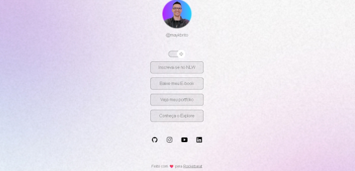

Devlinks
Sobre o Projeto
Este projeto foi criado utilizando HTML e CSS.
O site reúne seus principais links (como GitHub, LinkedIn, Instagram e portfólio) em uma única página de fácil acesso, com design limpo e foco na experiência do usuário.
Imagem do Projeto

Tecnologias Utilizadas
- HTML5
- CSS3
- JavaScript
- Figma
- Git e GitHub
Conceitos praticados
- HTML semântico
- estilos CSS
- eventos DOM